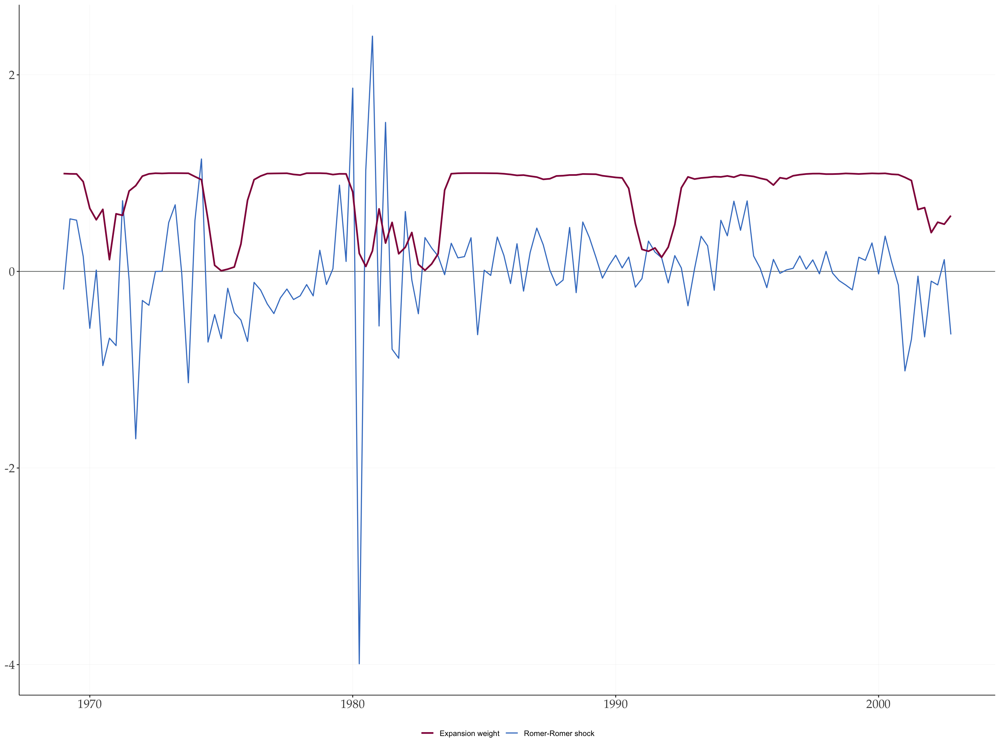
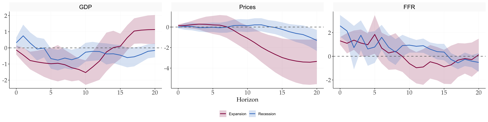
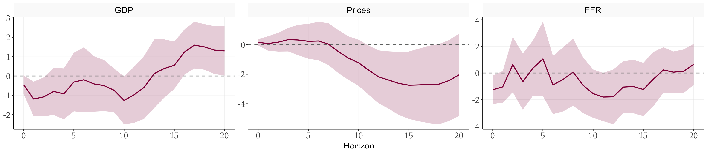
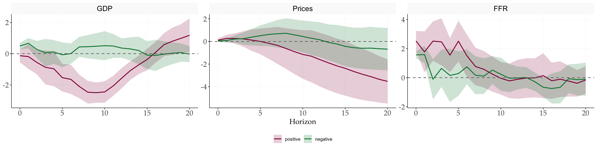
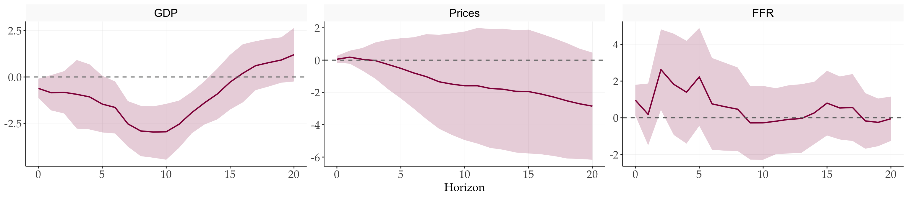
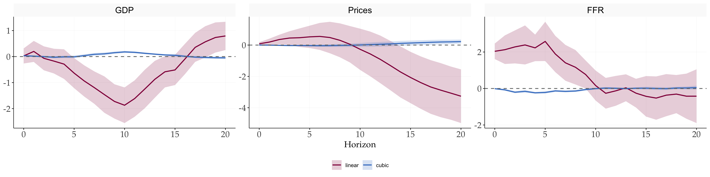
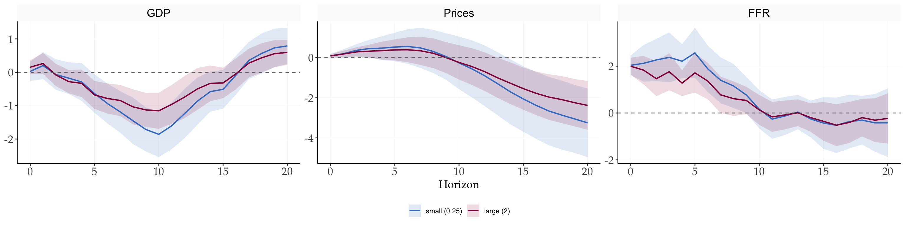

library(tidyverse)
library(tidyMacro)
library(zoo)
set_theme(fThemeTidyMacro())Nonlinear and State-Dependent Local Projections
Tenreyro and Thwaites (2016)
This chapter reproduces the nonlinear local-projection designs in Tenreyro and Thwaites (2016) with fNLLP(). The original MATLAB archive estimates a single US quarterly time series. It is neither a panel model nor LP-IV: the identified monetary shock is placed directly in each projection. Three designs appear in the archive:
- A smooth-transition state-dependent LP
- Positive versus negative shocks
- A linear-plus-cubic shock response
The baseline uses horizons 0 through 20, one lag of the outcome, one lag of the federal funds rate, a linear trend, and 90% intervals. Its expansion weight is a logistic transform with slope 3 around the 20th percentile of trailing seven-quarter GDP growth. The data section below builds that weight, the trend, and the price level explicitly, so every regressor fNLLP() uses is visible in the formula.
1 The three specifications
The notation follows Tenreyro and Thwaites (2016): \(\varepsilon_t\) is the identified monetary policy shock, \(t\) a linear time trend, and \(\mathbf{x}_t\) the controls, one lag each of the dependent variable and the federal funds rate. Superscripts \(b\) and \(r\) denote an expansion (boom) and a recession. fNLLP() follows the rules of fLP(): the RHS is estimated as written, and only the intercept is added internally, so the trend and the lags appear in every formula below.
1.1 State-dependent projection
The impulse response of \(y\) at horizon \(h\in\{0,\dots,H\}\) in state \(j\in\{b,r\}\) is the coefficient \(\beta_h^j\) in
\[y_{t+h}=\tau_h t+F(z_t)\left(\alpha_h^b+\beta_h^b\varepsilon_t+\boldsymbol{\gamma}_h^{b\prime}\mathbf{x}_t\right)+\left(1-F(z_t)\right)\left(\alpha_h^r+\beta_h^r\varepsilon_t+\boldsymbol{\gamma}_h^{r\prime}\mathbf{x}_t\right)+u_{t+h}, \tag{1}\]
where \(F(z_t)\) is a logistic function of the state indicator \(z_t\),
\[F(z_t)=\frac{\exp\left(\theta\,\frac{z_t-c}{\sigma_z}\right)}{1+\exp\left(\theta\,\frac{z_t-c}{\sigma_z}\right)}.\]
\(z_t\) is a trailing seven-quarter moving average of real GDP growth and \(\sigma_z\) its standard deviation. \(c\) is set so that 20 percent of the sample is classified as recession, and \(\theta=3\) sets how sharply the economy switches between regimes.
In fNLLP() this is type = "state". Every RHS term is interacted with \(F(z_t)\) and \(1-F(z_t)\), and the intercept is split the same way. Terms listed in common keep a single coefficient: common = "trend" gives the shared \(\tau_h t\) of equation (1). regimes only labels the two components. Both regime coefficients come from one regression together with their HAC covariance, so the standard error of \(\beta_h^b-\beta_h^r\) is valid.
1.2 Positive versus negative shocks
The state-independent model with sign asymmetry is
\[y_{t+h}=\tau_h t+\alpha_h+\beta_h^+\max[0,\varepsilon_t]+\beta_h^-\min[0,\varepsilon_t]+\boldsymbol{\gamma}_h^{\prime}\mathbf{x}_t+u_{t+h}.\]
This is type = "sign". fNLLP() reports the two coefficients as estimated: positive is \(\beta_h^+\) and negative is \(\beta_h^-\). Both are responses per unit of the shock, so under linearity \(\beta_h^+=\beta_h^-\), and difference \(=\beta_h^+-\beta_h^-\) tests symmetry. The response to a loosening of size one is \(-\beta_h^-\).
1.3 Small versus large shocks
Adding the cubed shock gives
\[y_{t+h}=\tau_h t+\alpha_h+\beta_h^s\varepsilon_t+\beta_h^l\varepsilon_t^3+\boldsymbol{\gamma}_h^{\prime}\mathbf{x}_t+u_{t+h}.\]
This is type = "cubic", with components linear (\(\beta_h^s\)) and cubic (\(\beta_h^l\)). The response to a shock of size \(d\) is \(\beta_h^s d+\beta_h^l d^3\). predict() evaluates this expression and its HAC variance, including the covariance between the two coefficients.
1.4 Corrections to the printed equations
The equations above differ from the printed article in four places. Each follows from the article’s own description of the method or from the replication code.
- Horizon subscripts. The article prints \(\tau t\), \(\boldsymbol{\gamma}^{b}\), \(\boldsymbol{\gamma}^{r}\), and \(\boldsymbol{\gamma}\) without \(h\). Each horizon is a separate regression, which the article itself notes when it invokes Kruskal’s theorem for equation-by-equation OLS.
stlpm.mre-estimates the whole coefficient vector, trend included, at every \(h\). The trend and control coefficients are therefore \(\tau_h\) and \(\boldsymbol{\gamma}_h\). - Timing of the error. The article prints \(u_t\). The residual of a horizon-\(h\) projection is dated \(t+h\), which is why it is serially correlated and needs HAC inference.
- Intercept in the sign and cubic models. The article prints \(\alpha_h^b\), a regime superscript, in two equations that have no regimes.
stlpm2.mandstlpm3.mestimate a single constant, \(\alpha_h\). - Nonlinear Romer-Romer regression. Equation (3) of the article has \(FFR_t\) on the left-hand side. The linear version, equation (2), and
generate_shocks.mboth use the change \(\Delta FFR_t\); see the data section.
1.5 Fixed regressor sample
balanced = TRUE fixes the regressor dates across horizons and reads \(y_{t+h}\) from later rows of the data, as stlpm.m does with startS:endS and startS+h:endS+h. Shocks run from 1969Q1 to 2002Q4, and the outcomes are read up to five years later, the end of 2007. The data must therefore run \(H\) quarters past the last shock.
2 Setup
3 Data
TenreyroThwaites2016 holds the series from the replication workbook in their original units: log real GDP, PCE inflation at an annual rate (as a fraction), the federal funds rate, and the quarterly Romer-Romer shocks for 1969Q1-2002Q4. The article’s text and the workbook use the PCE deflator, while its figure notes say “GDP deflator”; this chapter follows the data.
The shocks are residuals from the Romer and Romer (2004) reaction function, estimated at FOMC meetings and summed within each quarter. With \(\mathbf{X}_t\) the Romer-Romer controls, RRShock is \(\widehat{\varepsilon}_t\) from the linear regression
\[\Delta FFR_t=\boldsymbol{\beta}^{\prime}\mathbf{X}_t+\varepsilon_t, \tag{2}\]
and RRShockNL is \(\widehat{\widetilde{\varepsilon}}_t\) from its state-dependent analogue
\[\Delta FFR_t=F(z_t)\,\boldsymbol{\beta}^{b\prime}\mathbf{X}_t+\left(1-F(z_t)\right)\boldsymbol{\beta}^{r\prime}\mathbf{X}_t+\widetilde{\varepsilon}_t. \tag{3}\]
Equation (3) carries the \(\Delta\) that the printed article omits.
data("TenreyroThwaites2016")
TenreyroThwaites2016 |>
dplyr::filter(!is.na(RRShock)) |>
head()
#> # A tibble: 6 × 6
#> Date logGDP Inflation FFR RRShock RRShockNL
#> <date> <dbl> <dbl> <dbl> <dbl> <dbl>
#> 1 1969-01-01 8.35 0.0392 6.79 -0.184 -0.253
#> 2 1969-04-01 8.36 0.0509 8.9 0.535 0.645
#> 3 1969-07-01 8.36 0.0489 9.15 0.521 -0.0598
#> 4 1969-10-01 8.36 0.0460 8.97 0.154 -0.115
#> 5 1970-01-01 8.36 0.0462 7.76 -0.578 -0.426
#> 6 1970-04-01 8.36 0.0440 7.6 0.0138 0.229The cleaning step builds every variable the projections use:
GDP: log real GDP × 100, so responses are in percent.Inflation: in percent at an annual rate.Prices: the log price level × 100, the running sum of quarterly inflation.cumulative = TRUEregresses \(p_{t+h}-p_{t-1}=\sum_{j=0}^{h}\pi_{t+j}\) on the regressors at \(t\). Withbalanced = TRUEthe regressor rows are the same at every horizon, so by linearity of OLS its coefficient equals \(\sum_{j=0}^{h}\beta_j\) of the inflation projections, the cumulated response the archive reports. In a sample that shrinks with \(h\) the two differ, and long-differencing inflation itself would not give the cumulated inflation response.Growth7: the state indicator \(z_t\), a trailing seven-quarter mean of quarterly GDP growth. It is lagging rather than centred, so future values of the outcomes do not enter the state.trend: the linear trend \(t\).Expansion: the transition weight \(F(z_t)\). Within the shock sample, \(z_t\) is centred at its 20th percentile (\(c\)), divided by its standard deviation (\(\sigma_z\)), and passed through the logistic function with \(\theta=3\).quantile(type = 5)is the percentile rule of MATLAB’sprctile.
tt <- TenreyroThwaites2016 |>
mutate(
GDP = 100 * logGDP,
Inflation = 100 * Inflation,
Prices = cumsum(coalesce(Inflation, 0)) / 4,
Growth7 = rollmeanr(GDP - lag(GDP), 7, fill = NA),
trend = row_number()
) |>
mutate(
z = if_else(is.na(RRShock), NA, Growth7),
z = (z - quantile(z, 0.20, type = 5, na.rm = TRUE)) / sd(z, na.rm = TRUE),
Expansion = plogis(3 * z)
) |>
dplyr::filter(Date >= "1968-10-01", Date <= "2007-10-01") |>
select(Date, GDP, Inflation, Prices, FFR, RRShock, Growth7, Expansion, trend)The sample starts one quarter before the first shock, for the lags, and ends 20 quarters after the last one, 2002Q4, for the outcomes at the longest horizon.
tt |>
dplyr::filter(!is.na(RRShock)) |>
ggplot(aes(x = Date)) +
geom_hline(yintercept = 0, linewidth = 0.4, colour = "#707372") +
geom_line(aes(y = RRShock, colour = "Romer-Romer shock"), linewidth = 0.6) +
geom_line(aes(y = Expansion, colour = "Expansion weight"), linewidth = 0.9) +
scale_colour_manual(
values = c("Romer-Romer shock" = "#407EC9", "Expansion weight" = "#910048")
) +
labs(x = NULL, y = NULL, colour = NULL) +
theme(legend.position = "bottom")
4 1 · State-dependent responses
Each outcome gets its own regression, as in the archive. The GDP and price equations control for one lag of their own variable and of the federal funds rate, and the federal funds rate equation for one lag of itself. The trend is written into every formula and declared common. The price level is projected with cumulative = TRUE, so its LHS is \(p_{t+h}-p_{t-1}\). nw_lags = 0 and nw_offset = 0 set the Newey-West lag at horizon \(h\) to \(h\), the rule of Jordà (2005) and of LPmodel.m in Cesa-Bianchi’s VAR Toolbox: a horizon-\(h\) projection has MA(\(h\)) residuals. The last section compares the resulting bands with the paper’s.
Only the GDP call is written out in full. update() re-runs a fit with the arguments given changed and all others kept, so the price and federal funds rate fits only state their own formula and, for prices, cumulative = TRUE.
gdp_state <- fNLLP(
GDP ~ RRShock + l(GDP, 1) + l(FFR, 1) + trend,
data = tt,
horizons = 20,
shock = "RRShock",
type = "state",
state = "Expansion",
common = "trend",
regimes = c("Expansion", "Recession"),
balanced = TRUE,
nw_lags = 0,
nw_offset = 0
)
prices_state <- update(
gdp_state,
Prices ~ RRShock + l(Inflation, 1) + l(FFR, 1) + trend,
cumulative = TRUE
)
ffr_state <- update(gdp_state, FFR ~ RRShock + l(FFR, 1) + trend)
# Show
gdp_state
#>
#> Nonlinear Local Projections (fNLLP)
#> ---------------------------------------------
#> Original formula : GDP ~ RRShock + l(GDP, 1) + l(FFR, 1) + trend
#> Expanded formula : GDP ~ RRShock + GDP_l1 + FFR_l1 + trend
#> Type : smooth state dependence
#> Shock : RRShock
#> State : Expansion (Expansion = Expansion, Recession = 1 - Expansion)
#> Common terms : trend
#> Design columns : Expansion:(Intercept), Expansion:RRShock, Expansion:GDP_l1, Expansion:FFR_l1, (1-Expansion):(Intercept), (1-Expansion):RRShock, (1-Expansion):GDP_l1, (1-Expansion):FFR_l1, trend
#> Horizons : 0 to 20
#> Sample : fixed regressor dates (balanced)
#> Cumulative : FALSE
#> Confidence : 90%
#> NW lags : base = 0 , offset = 0 -> effective at horizon h: max(base + h + 0, 0)
#> Observations : 136
#>
#> Response of 'GDP' (shock = 'RRShock'):
#> Expansion Recession difference t_diff
#> 0 -0.1319 0.3180 -0.4499 -1.5455
#> 1 -0.4443 0.7462 -1.1905 -2.1839
#> 2 -0.7835 0.2984 -1.0819 -1.7729
#> 3 -0.8713 -0.0719 -0.7994 -1.0790
#> 4 -0.9371 -0.0124 -0.9248 -1.1548
#> 5 -0.9824 -0.6661 -0.3163 -0.3441
#> 6 -0.9531 -0.7572 -0.1960 -0.1921
#> 7 -1.0425 -0.6320 -0.4105 -0.4714
#> 8 -1.2304 -0.7342 -0.4963 -0.6165
#> 9 -1.3358 -0.5996 -0.7362 -1.0743
#> 10 -1.5291 -0.2661 -1.2630 -1.6889
#> 11 -1.1884 -0.2142 -0.9742 -1.1059
#> 12 -0.8159 -0.2277 -0.5883 -0.5945
#> 13 -0.2560 -0.3754 0.1194 0.1107
#> 14 0.0193 -0.3658 0.3851 0.4201
#> 15 0.1014 -0.4506 0.5521 0.7403
#> 16 0.6278 -0.6026 1.2304 1.7354
#> 17 1.0419 -0.5539 1.5958 2.1746
#> 18 1.0985 -0.4046 1.5031 2.0992
#> 19 1.1257 -0.2112 1.3369 1.7819
#> 20 1.1370 -0.1581 1.2952 1.6707The printout lists the design columns: each regime has its own intercept, shock, and control coefficients, and the trend enters once.
fPlotNLLP() accepts several fits and draws one panel per outcome.
fPlotNLLP(gdp_state, prices_state, ffr_state)
The difference \(\beta_h^b-\beta_h^r\) uses the joint HAC covariance of the two regime coefficients.
fPlotNLLP(gdp_state, prices_state, ffr_state, what = "difference")
tidy.fNLLP() returns the same numbers in long form. The table below shows them at the horizons used in the paper’s tables; t_stat in the difference rows tests \(\beta_h^b=\beta_h^r\).
bind_rows(
tidy.fNLLP(gdp_state),
tidy.fNLLP(prices_state),
tidy.fNLLP(ffr_state)
) |>
dplyr::filter(horizon %in% c(4, 8, 12, 16)) |>
mutate(t_stat = estimate / se) |>
select(lhs, horizon, component, estimate, t_stat) |>
mutate(across(c(estimate, t_stat), \(v) round(v, 3)))
#> lhs horizon component estimate t_stat
#> 1 GDP 4 Expansion -0.937 -1.794
#> 2 GDP 8 Expansion -1.230 -2.402
#> 3 GDP 12 Expansion -0.816 -1.155
#> 4 GDP 16 Expansion 0.628 1.333
#> 5 GDP 4 Recession -0.012 -0.035
#> 6 GDP 8 Recession -0.734 -1.958
#> 7 GDP 12 Recession -0.228 -0.694
#> 8 GDP 16 Recession -0.603 -1.642
#> 9 GDP 4 difference -0.925 -1.155
#> 10 GDP 8 difference -0.496 -0.617
#> 11 GDP 12 difference -0.588 -0.594
#> 12 GDP 16 difference 1.230 1.735
#> 13 Prices 4 Expansion 0.264 0.586
#> 14 Prices 8 Expansion -0.326 -0.467
#> 15 Prices 12 Expansion -1.961 -2.245
#> 16 Prices 16 Expansion -3.173 -2.632
#> 17 Prices 4 Recession -0.056 -0.207
#> 18 Prices 8 Recession 0.145 0.413
#> 19 Prices 12 Recession 0.218 0.559
#> 20 Prices 16 Recession -0.448 -0.992
#> 21 Prices 4 difference 0.320 0.510
#> 22 Prices 8 difference -0.470 -0.530
#> 23 Prices 12 difference -2.179 -1.999
#> 24 Prices 16 difference -2.725 -1.824
#> 25 FFR 4 Expansion 0.977 1.680
#> 26 FFR 8 Expansion 0.421 0.453
#> 27 FFR 12 Expansion -0.902 -0.984
#> 28 FFR 16 Expansion -0.726 -0.737
#> 29 FFR 4 Recession 0.618 0.716
#> 30 FFR 8 Recession 0.355 0.535
#> 31 FFR 12 Recession 0.894 2.439
#> 32 FFR 16 Recession -0.267 -0.828
#> 33 FFR 4 difference 0.359 0.284
#> 34 FFR 8 difference 0.065 0.043
#> 35 FFR 12 difference -1.796 -1.432
#> 36 FFR 16 difference -0.459 -0.369The responses here are per unit of the shock. The paper instead rescales each regime’s responses so that the federal funds rate rises by one percentage point on impact. That ratio is a nonlinear function of coefficients from two different equations, which needs their joint covariance; fNLLP() estimates each outcome separately and does not provide it.
5 2 · Positive versus negative shocks
type = "sign" replaces the shock by \(\max[0,\varepsilon_t]\) and \(\min[0,\varepsilon_t]\). The controls are unchanged, and the trend is again written explicitly. state, common, and regimes belong to the state design, so the GDP fit is written out again rather than updated from gdp_state.
gdp_sign <- fNLLP(
GDP ~ RRShock + l(GDP, 1) + l(FFR, 1) + trend,
data = tt,
horizons = 20,
shock = "RRShock",
type = "sign",
balanced = TRUE,
nw_lags = 0,
nw_offset = 0
)
prices_sign <- update(
gdp_sign,
Prices ~ RRShock + l(Inflation, 1) + l(FFR, 1) + trend,
cumulative = TRUE
)
ffr_sign <- update(gdp_sign, FFR ~ RRShock + l(FFR, 1) + trend)fPlotNLLP(gdp_sign, prices_sign, ffr_sign, colors = c("#910048", "#00843D"))
fPlotNLLP(gdp_sign, prices_sign, ffr_sign, what = "difference")
6 3 · Large versus small shocks
type = "cubic" adds \(\varepsilon_t^3\) next to \(\varepsilon_t\). Following the paper, the cubic coefficient \(\beta_h^l\) is the object of interest: if it is significantly positive (negative), large shocks of either sign are proportionally more (less) powerful. The regressors are those of the sign design, so each fit is the corresponding sign fit with type changed.
gdp_cubic <- update(gdp_sign, type = "cubic")
prices_cubic <- update(prices_sign, type = "cubic")
ffr_cubic <- update(ffr_sign, type = "cubic")fPlotNLLP(gdp_cubic, prices_cubic, ffr_cubic)
predict() turns the two coefficients into the response to a shock of a given size. Dividing by the size gives the response per unit of the shock, which is constant across sizes in a linear model. The comparison below uses a small shock (0.25) and a large one (2, about three standard deviations of RRShock).
sizes <- c(0.25, 2)
bind_rows(
predict(gdp_cubic, size = sizes),
predict(prices_cubic, size = sizes),
predict(ffr_cubic, size = sizes)
) |>
mutate(
estimate = estimate / size,
lower = lower / size,
upper = upper / size,
size = factor(size, labels = c("small (0.25)", "large (2)")),
lhs = factor(lhs, levels = c("GDP", "Prices", "FFR"))
) |>
ggplot(aes(x = horizon, y = estimate, colour = size, fill = size)) +
geom_ribbon(aes(ymin = lower, ymax = upper), alpha = 0.15, colour = NA) +
geom_line(linewidth = 0.8) +
geom_hline(yintercept = 0, linetype = "dashed", colour = "#707372") +
facet_wrap(~lhs, scales = "free_y", nrow = 1) +
scale_colour_manual(values = c("#407EC9", "#910048")) +
scale_fill_manual(values = c("#407EC9", "#910048")) +
labs(x = "Horizon", y = NULL, colour = NULL, fill = NULL) +
theme(legend.position = "bottom")
7 Relation to the MATLAB archive
The point estimates match the archive’s raw coefficients. The notes below list where its shock choice, presentation, and inference differ, and two errors in its code. Click to expand.
NoteDifferences from the archive
- Shock. The archive’s GDP and inflation equations use the linearly identified shock even in the baseline, and only its federal funds rate equation switches to
RRShockNL. This chapter usesRRShockin all three equations; replacing it withRRShockNLin the federal funds rate formula reproduces the baseline exactly. - Presentation. The archive rescales responses by the federal funds rate’s impact response in each regime and smooths them with a centred three-quarter moving average. The figures here show the unscaled, unsmoothed coefficients.
- Scaling of the recession responses in the published tables. Rebuilding Table 1 of the paper from the raw
fNLLP()coefficients (cumulated, divided by the federal funds rate’s impact response, withRRShockNLin the federal funds rate equation as in the archive’s baseline) reproduces all eight expansion entries to four decimals. The recession entries match only with the denominator the archive’s code actually uses. Instlpm.mthe recession response is scaled asbetaNL(:,2)/betaRNL(2); becausebetaRNLis a 21 × 2 matrix,betaRNL(2)is element (2,1), the expansion federal funds rate response at horizon 1 (about 1.17), rather than the recession impact responsebetaRNL(1,2)(about 2.28). The published recession responses are therefore about 1.9 times the intended scaled values; with the intended denominator, for example, GDP at horizon 4 is 0.0056 instead of the published 0.0109. The delta-method standard errors instlpm_inference.muse the intended denominator,results(end).NL.beta(1,2). The unscaled coefficients reported in this chapter are unaffected. - Variance of the positive-minus-negative difference. In
stlpm_inference2.m(line 45) andstlpm_inference3.m(line 43), the variance of the difference between the two scaled, unsmoothed responses is computed asvar_pos - var_neg, which is not the variance of a difference; it is \(V_{11}+V_{22}-2V_{12}\). The smoothed and cumulated blocks of the same files use the correct delta-method formula, and the paper’s tables and figures use those, so the published results are not affected.fNLLP()reports \(V_{11}+V_{22}-2V_{12}\). - Inference. The point estimates agree, but the confidence intervals do not, for three reasons.
- Lag length. Both approaches use a Newey-West estimator with Bartlett weights. This chapter sets the lag to \(h\) at horizon \(h\). The archive’s Driscoll-Kraay covariance (
NeweyWestDK.m) uses a fixed lag of \(L=H+1=21\) at every horizon and multiplies by \(N/(N-k)\approx1.06\). The article writes “\(L = h + 1\), where \(h\) is the maximum horizon”, which is \(H+1\) in the notation used here. Stacking the horizons does not change the standard error of a single coefficient; it supplies the covariances across horizons that the paper’s cumulated and smoothed responses need. - Size of the gap. For the raw expansion and recession shock coefficients of GDP, inflation, and the federal funds rate, the standard errors here relative to the archive’s are 0.78 to 2.96 at \(h=0\)–4 (median 1.55), 0.95 to 1.48 at \(h=5\)–9 (median 1.13), and 0.89 to 1.40 at \(h=10\)–20 (median 1.01). The gap is largest on impact, where the lag here is 0 against 21 in the archive, and it closes as \(h\) approaches 21. Rebuilding the archive’s standard error as Newey-West with lag 21 times \(N/(N-k)\) reproduces
stlpm_inference.mto within \(10^{-7}\). - Objects and methods. The paper’s bands are for responses scaled by the federal funds rate’s impact response and smoothed, using the delta method, and the paper also reports a block bootstrap. Neither is reproduced here.
- Lag length. Both approaches use a Newey-West estimator with Bartlett weights. This chapter sets the lag to \(h\) at horizon \(h\). The archive’s Driscoll-Kraay covariance (
References
Jordà, Òscar. 2005. “Estimation and Inference of Impulse Responses by Local Projections.” American Economic Review 95 (1): 161–82. https://doi.org/10.1257/0002828053828518.
Tenreyro, Silvana, and Gregory Thwaites. 2016. “Pushing on a String: US Monetary Policy Is Less Powerful in Recessions.” American Economic Journal: Macroeconomics 8 (4): 43–74. https://doi.org/10.1257/mac.20150016.